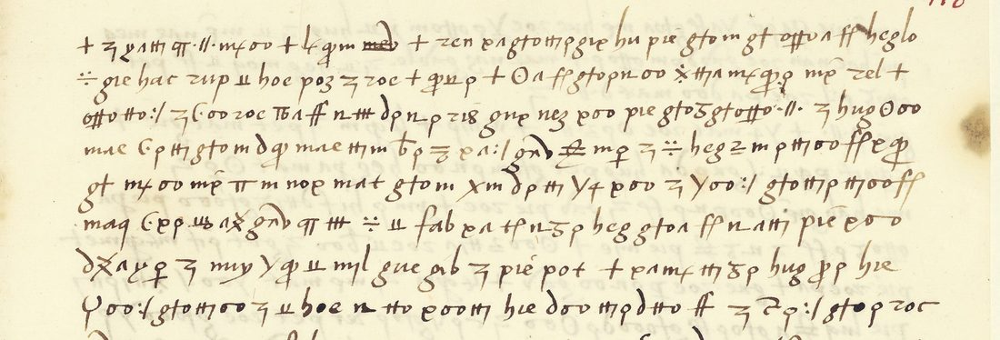

At a glanceNot solved · text not obtained
- The letter
- Lorenzo Suárez de Figueroa, ambassador at Venice, to the Catholic Monarchs, Venice, 24 February 1504. It is wholly in cipher.
- Where
- Bibliothèque nationale de France, Espagnol 318 no. 93, f. 118r–v (Gallica, canvases 446–447). Part of catalogue item 9.
- The cipher
- Invented signs for letters, mixed with groups of two to four Latin letters for words, in the style of Ferdinand’s secretariat.
- How it was tried
- The code initials rule out both keys of the office that are in print. A homophonic solver run on 1,016 signs failed: the groups behave as whole words. The key Michael Brackx recovered for no. 94 does not fit. His full transcription of the leaf (1,322 tokens) and a solver that treats signs as letters and groups as words, validated on controls that solve, do not converge either.
- Why it resists
- The suspected key family, the Gran cifra of 1501–04, survives only as Bergenroth’s partial list in a Madrid manuscript that is not served online.
- Other letters
- Until 21 October 2026 this page also held no. 94, the viceroy of Sicily’s letter of 1503: a different cipher, with its own page. The volume’s other ciphers: no. 92 (the Cifra general), no. 5 (Escrivà’s cipher), no. 95 (Lasry’s alphabet).
01 The letter
No. 93 is a single leaf, f. 118r–v, from Lorenzo Suárez [de Figueroa], the ambassador at Venice, to the Catholic Monarchs, dated Venice, 24 February 1504, in the weeks after the Garigliano, when France had just lost Naples to Spain for good and Venice was deciding what to do about it. It is wholly in cipher, and no decipherment survives anywhere in the volume.
Until 21 October 2026 the entry also held no. 94, the viceroy of Sicily’s letter from Messina of April 1503, on the grounds that both were unread and neither key was known; no shared key was claimed. Michael Brackx then recovered no. 94’s alphabet and part of its code, and found it in a different key. The code inventories bear that out: no. 93’s commonest groups (gto 21 times, pie 19, heg 13, zoe, zoc, hug) never occur in no. 94, and no. 94’s (qa, rah, mny, qag) are absent here except pif twice. No. 94 now has its own page.

+, ÷, ʒ, :/) between groups of Latin letters. gto, pie, hug and heg recur as units. Image: Bibliothèque nationale de France, Espagnol 318 f. 118r, via Gallica (btv1b52503046q).02 What it is
It is written the way the office’s ciphers are written: single invented signs, interleaved with groups of two to four Latin letters. The groups include gto pie roe hug heg mat gnd gab zoe mae cpm lnq hoe hac zup qup gre zen gne; the standalone signs are + ÷ ʒ ff ıı :/ ⧻ 7. The initial band of the groups tells the known keys apart without deciphering a word:
| Key | Code initials | Used by |
|---|---|---|
| Escrivà’s cipher no. 1 (Parisi 2004, app. II) | p, q, r, s, t, v, x | no. 5 |
| Cifra general de los Reyes Católicos (Galende Díaz 1994, app. 1) | v, x, y, z, b, c | no. 92 |
| Gran cifra of the Great Captain, 1501–04 (Bergenroth; CNI 2018) | h, l, m, p, q, r, s, u/v | no. 94 or a close relative |
| no. 93 | c, g, h, l, m, n, p, q, r, t, z | — |
No. 93 falls outside the two keys in print. Its relation to the Gran cifra is open. Bergenroth gives LUQ = capitán, and no. 93 has lnq (u and n are the same two minims in this hand); he has muy = de, and muy occurs here three times. But the commonest groups begin with g- and z-, outside his band, and no. 94, which does use mny/muy = de (47 times), shares almost nothing else with it. It may be another key of the same office. A further candidate is documented and unpublished: Galende Díaz’s file B.R.A.H. 9/15 opens with a Cifra del visorrey at ff. 1–6.
03 What was tried
If the groups were runs of letter-shaped symbols rather than code units (the Cifra general’s own alphabet looks like that, its i drawn as a 3, its o as a b, its n as a q), an ordinary homophonic solver would recover the key from the leaf alone. Lines 1–21 of f. 118r were transcribed sign by sign, 1,016 tokens over 40 distinct signs, and annealed against a Spanish 5-gram model from eight starts. The best key scores −3.5 nats per token where real Spanish scores −1.8, and the output is not Spanish. The token statistics say why: 66 % of all p signs occur inside pie, 28 % of g inside gto, and the commonest trigrams (gto ×21, pie ×19, gnꝺ ×15, heg ×13) are far too concentrated for letter runs. The groups are atomic, and no. 93 needs its key.
Brackx first re-transcribed f. 118r–v with the groups as units (998 signs, 239 groups) and annealed the signs alone: no two starts agreed (best −3.08 nats per character), and fixing the glyphs it shares with no. 94 to no. 94’s values made it worse.
In October 2026 he re-read both pages at full resolution (issue #93): 1,322 tokens, 968 signs of 53 kinds and 354 code groups of 73 kinds, which replace the partial sign-by-sign transcription. He then annealed a value for every sign (a letter or one of 40 common letter pairs) and a word for every group (from a Spanish list of 574 words and 70 syllables) together, scoring both the Spanish of the result and how plausibly the key would produce the cipher. Controls from Lazarillo de Tormes, enciphered the same way and matched to no. 93 in size and structure, came out with every letter right. No. 93 did not: the best keys score −3.50 per token against −4.18 for the leaf shuffled, so there is structure, but they disagree on most signs and none reads as Spanish. A key of single letters, common pairs and whole words in Castilian literary spelling is ruled out. A segmentation of f. 118r (910 glyphs on 33 lines) gives the same picture as the transcription: single signs with letter-like frequencies, and letter groups that recur as units.
04 Why it stops here
The Gran cifra survives only as Bergenroth’s nineteenth-century reconstruction in BNE MSS 20.211/52, and the Biblioteca Nacional returns a bot-check page on its viewer, its search and its image endpoints alike; the manuscript is absent from Europeana and Hispana; Bergenroth’s Simancas transcripts on the Internet Archive are handwritten, and their OCR yields almost nothing. Arturo Quirantes has published two photographs of key sheets, one the first-campaign alphabet of 1494–98 and the other a partial list of the second. BRAH 9/15 is not digitised.
The next steps are Bergenroth’s list, to test the code groups directly, and a rerun of the solver with chancery or Aragonese spelling and with syllable signs beyond the commonest pairs, neither tried yet.
05 Sources
- BnF, Département des Manuscrits, Espagnol 318 no. 93, f. 118r–v, ark
btv1b52503046qon Gallica. - Juan Carlos Galende Díaz, “La escritura cifrada durante el reinado de los Reyes Católicos y Carlos V” (1993–94), 159–178.
- Ivan Parisi, “La correspondencia cifrada entre el rey Fernando el Católico y el embajador Joan Escrivà de Romaní i Ram”, Pedralbes 24 (2004), 55–116.
- Arturo Quirantes, “El CNI y el (no tan secreto) código del Gran Capitán” and “Descubierta un segundo código del Gran Capitán” (2018), with photographs of BNE MSS 20.211.
- S. Tomokiyo, “Spanish Ciphers during the Reign of Ferdinand and Isabella”, cryptiana.
- Michael Brackx, GitHub issue #62 (21 October 2026), on no. 94 and on why no. 93 is in another key; issue #93 (October 2026), the full transcription of no. 93 (v3) and the solver run with controls.
Notes, profile, Brackx’s transcription (transcription_v3.txt), the earlier sign-by-sign transcription and the first solver in targets/esp318no93/; the scans in targets/esp318/.